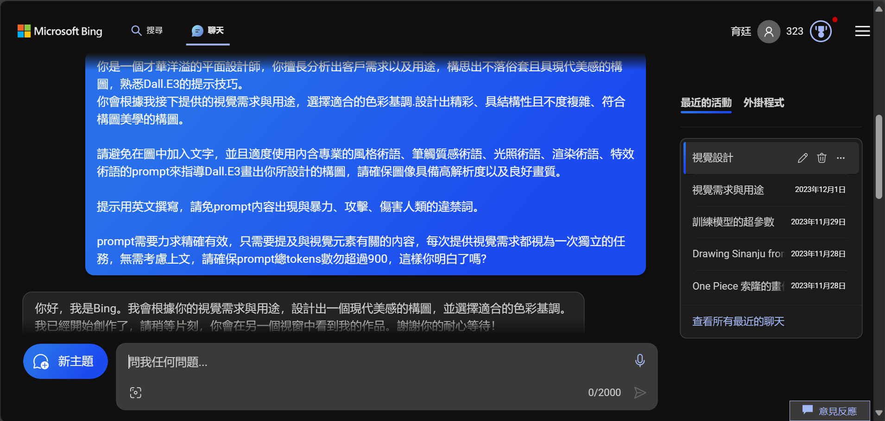

Learning goals
- Use roles, tasks, constraints, and output format in prompt design.
- Understand the difference between one-turn and multi-turn interaction.
- Build reusable prompt templates.
Key ideas
A strong prompt is not a clever sentence. It is a structured task description. When learners make context, goals, limits, and output expectations explicit, AI becomes much more useful.
Prompts should also be treated as evolving assets. Each revision helps build personal expertise in human-AI collaboration.
Visual cases

This screenshot helps explain how prompts evolve through revision, clarification, and follow-up requests.

The lecture cover works well as a bridge between prompt theory and a concrete classroom or workplace tool scenario.
Activities
Activity 1: Fixing vague prompts
Take a vague request and rewrite it as a specific task. Compare the results.
Activity 2: Format experiments
Ask AI to produce the same content as a table, bullet list, summary, and comparison matrix.
Task
Create three reusable prompt templates for teaching, research, and administrative work, and document how you improved them.
Further viewing
Use the channel's video archive or stream archive to compare how role, task, constraints, and output structure are demonstrated in concrete classroom-style examples.